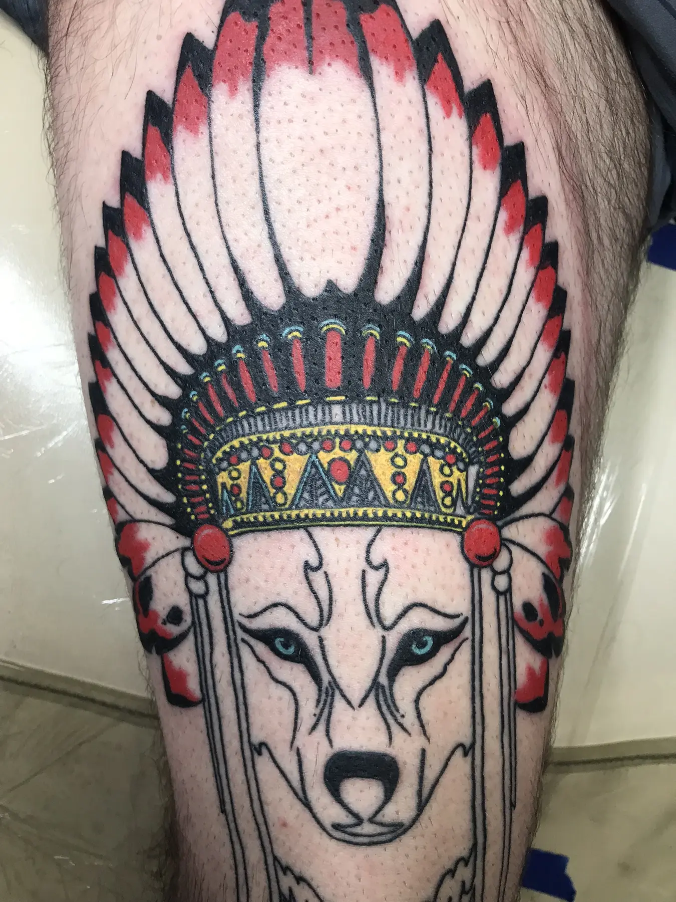

Primary Symbol
Choose the image or object that carries the most meaning so the design has a clear focal point.
Memorial Tattoos • Oklahoma City
Josh helps clients translate a person, memory, service, place, or shared symbol into a custom tattoo that fits the body and remains readable over time.

Josh’s planning approach
Memorial projects often begin with more material than one tattoo can carry: photographs, handwriting, dates, quotes, uniforms, flowers, locations, objects, and shared memories. Josh’s role is to identify the elements that communicate the memory most clearly at the chosen scale.
Clients decide how much of the story they want to share. Private details do not need to appear online or in the public portfolio for the artist to create meaningful work.
Design priorities
These decisions determine whether the idea works as a tattoo on the selected body area.
Choose the image or object that carries the most meaning so the design has a clear focal point.
Handwriting and small text require enough size and spacing to remain legible as the tattoo ages.
High-resolution photographs and clean scans provide better information than screenshots or cropped social-media images.
The client controls which personal details are shared, photographed, or discussed publicly.
Placement and execution
A portrait depends heavily on reference quality and practical scale. A symbolic memorial can use an object, animal, flower, landscape, badge, or place to represent the person without reproducing a face. Handwriting may be traced from a clear original, but very small signatures often need spacing adjustments.
Military memorials may include service-related elements, but the design should avoid packing every emblem, date, rank, and quotation into one small area. Bring the complete story; the consultation can determine what belongs in the final tattoo.

Portfolio connections
Project pages discuss only the facts visible or published. Private client stories, exact session counts, and healed status are not invented.
An illustrative subject that can represent guidance, home, or a personal place.
View details →A botanical subject with room for family, place, or seasonal meaning.
View details →
A strong symbolic composition built around identity and character.
View details →Prepare for consultation
Questions clients ask
No. Objects, animals, flowers, landscapes, handwriting, symbols, and places can communicate a memory without using a portrait.
A clean original or high-resolution scan can be evaluated. The final size may need to be larger than expected so the lettering remains readable.
Yes. Share only what the artist needs to understand the project. You can also discuss whether the finished tattoo may be photographed or posted.
Bring everything to consultation. Josh can help identify the primary subject and remove details that would compete with the memorial’s central meaning.
Start the project
Share the subject, body location, approximate size, references, and any existing work in the area.